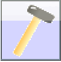

Netzwerke
Inhalt
2. Netzwerke¶
In diesem Kapitel wirst du selbst tätig. Mit dem Netzwerksimulator Filius kannst du die Grundlagen von Computer-Netzwerken auf dem eigenen Computer ausprobieren. Den Netzwerksimulator Filius gibt es für Windows, OSX und Linux. Du kannst Filius kostenlos unter https://www.lernsoftware-filius.de herunterladen und installieren.
2.1. Tipps beim Umgang mit Filius¶
Achte darauf, ob du die Arbeitsschritte im Entwurfsmodus  oder Aktionsmodus durchführen musst.
Verkleinere im Aktionsmodus das Hauptfenster so, dass die Desktop-Ansichten der einzelnen Geräte neben das Hauptfenster passen.
Benenne die Rechner nach ihrer Funktion und hänge einen Teil der IP-Adresse an (z.B. Webserver mit der IP-Adresse 192.168.0.3 bekommt den Namen „Webserver_0.3“).
Verwende zur besseren Übersicht für Clients („normale“ Rechner) immer das Notebook.
Verwende für Computer die eine Server-Funktion ausüben immer den Rechner.
Wenn du mehr als zwei Computer verbinden möchtest, benötigst du einen Switch.
Falls du zwei Netzwerke miteinander verbinden möchtest, benötigst du einen Vermittlungsrechner (Router).
Über Modems können Netze rechnerübergreifend verbunden werden.
2.2. Kleine LAN-Party: Verbindung von zwei Rechnern¶
Übung 1¶
Entwurfsmodus¶
Erstelle ein Netzwerk mit zwei vernetzten Clients („normale“ Rechner)
Ändere Die Namen der Notebooks auf Client_10 und Client_20.
Aktionsmodus¶
Installiere auf Client_1_10 die Befehlszeilenkonsole
Öffne die Befehlszeilenkonsole und trage folgenden Befehl ein:
ping 192.168.0.20.Öffne mit einem Rechtsklick auf den entsprechenden Clienten Datenaustausch anzeigen.
Fragen¶
Was beobachtest du, wenn du dir die Befehlszeilenkonsole und die Datenaustausch-Fenster (Protokolle) beider Clients anschaust?
Wieviele Pakete werden verschickt?
Wieviele Pakete werden empfangen?
Was ist im Datenaustausch-Fenster von Client 1_10 passiert?
Was ist im Datenaustausch-Fenster von Client 2_10 passiert?
Ping erklärt¶
Ping ist ein Diagnose-Programm, mit dem überprüft werden kann, ob ein bestimmtes Gerät in einem IP-Netzwerk erreichbar ist. Daneben es auch die Zeitspanne zwischen dem Aussenden eines Paketes zu diesem Host und dem Empfangen eines daraufhin unmittelbar zurückgeschickten Antwortpaketes an (= Paketumlaufzeit, meist round trip time oder RTT genannt). Das Programm wird üblicherweise als Konsolenbefehl ausgeführt.

Schicke eine Nachricht und beobachte im Datenaustausch-Fenster was passiert.
2.3. Switch und Webserver-Software¶
Übung 2¶
Entwurfsmodus¶
Erstelle ein Netzwerk mit zwei Clients und einem Server (Du benötigst hierzu zwei Notebooks, einen Rechner, einen Switch und Kabel).
Bennene die Rechner folgensermaßen
Name |
IP-Adresse |
|---|---|
|
|
|
|
|
|
Aktionsmodus¶
Installiere auf dem Webserver_12 die Software “Webserver” und starte ihn anschließend.
Installiere auf beiden Clients einen “Webbrowser”.
Du möchtest nun die Webseite des Webservers aufrufen. Öffne dazu den Webbrowser deines Clients und trage in die Adresszeile die IP-Adresse des Webservers ein (siehe Tabelle).
Hat alles geklappt? Dann mache mit Übung 3 weiter.
Übung 3¶
Die Webseite gefällt dir nicht, deshalb möchtest du Änderungen daran vornehmen. Hierzu musst du vorher aber noch einige Arbeitsschritte ausführen.
Aktionsmodus¶
Installiere auf Webserver_12 den “Text-Editor”.
Öffne den “Text-Editor”. Klicke auf “Datei” -> “Öffnen” und wähle im Ordner “webserver” die Datei “index.html” aus. Hinweis: “index.html” muss im Feld “Dateiname” stehen, dann auf “Öffnen” klicken.
Die Homepage soll als “Titel” deine Namen erhalten. Ändere den Titel indem du den Begriff “Standardseite” durch deinen Namen ersetzt.
<title>Standardseite</title>wird geändert in z.B.<title>Tom Tubeless Homepage</title>. Klicke anschließend auf “Datei” -> “Speichern” und überprüfe deine Änderung im Webbrowser von Client_10 oder Client_11 (Hinweis: Adresse lautet 192.168.0.12).Ändere die Überschrift ebenfalls ab. Ersetze “Filius” durch deinen Namen.
<h2>FILIUS - Webserver</h2>wird geändert in z.B.<h2>Tubeless Webserver</h2>. Klicke anschließend auf “Datei” -> “Speichern” und überprüfe deine Änderung im Webbrowser von Client_10 oder Client_11.
Wenn die Übung 3 für dich kein Problem war, dann darfst du gerne auch das Bild auf der Homepage ändern.
Installiere auf Webserver_12 die Software “Datei-Explorer” und ändere das Bild der Homepage. Probiere es erst selbstständig, bevor du eine Lösung recherchierst. [2]
An den grün blinkenden Kabeln kann man den Netzwerkverkehr sehr gut erkennen!
2.4. Nameserver (DNS)¶
Übung 4¶
Wenn du im Internet unterwegs bist, rufst du die Seiten nicht über die IP-Adresse auf, sondern du gibst einen Namen ein -> z.B. www.google.de. Dies richtest du jetzt für deine geänderte Homepage ein.
Entwurfsmodus¶
Erweitere dein Netzwerk um einen Server (Name:
Nameserver_13; IP-Adresse:192.168.0.13).Verbinde den Nameserver_13 mit dem Switch.
Aktionsmodus¶
Installiere auf Nameserver_13 die Software “DNS-Server”.
Öffne die Software “DNS-Server” und fülle die Felder wie folgt aus:
Domainname:
www.server-management.deIP-Adresse:
192.168.0.12
Klicke danach auf “Hinzufügen” und anschließend auf “Starten”.
Entwurfsmodus¶
Nun musst du an deinen Clients und Servern noch Einstellungen vornehmen. Gebe bei allen Geräten unter “Domain Name Server” folgende IP-Adresse ein:
192.168.0.13.
Aktionsmodus¶
Jetzt kannst du testen, ob deine Homepage unter der Adresse
www.server-management.deerreichbar ist. Öffne dazu in Client_10 oder Client_11 deinen Webbrowser und gebe die Adresse ein.
Wenn deine Homepage erscheint hast du alles richtig gemacht. Falls die Meldung “Server konnte nicht erreicht werden!” angezeigt wird, hast du vermutlich den “DNS-Server” nicht gestartet.
2.5. Mailserver¶

Übung 5¶
Deine Rechner sind vernetzt, deine Homepage ist erreichbar, dann wird es Zeit für E-Mails.
Entwurfsmodus¶
Erweitere dein Netzwerk um einen Server:
Name:
Mailserver_14IP-Adresse:
192.168.0.14Domain Name Server:
192.168.0.13
Verbinde den Mailserver mit dem Switch.
Aktionsmodus¶
Installiere auf Mailserver_14 die Software “E-Mail-Server” und konfiguriere ihn:
Maildomain:
server-management.deErstelle zwei E-Mail-Konten:
Benutzername:
gracePasswort:
12345Konto erstellen
Benutzername:
alanPasswort:
12345Konto erstellen
Starte den E-Mail-Server.
Aktionsmodus¶
Installiere auf Client_10 und Client_11 die Software “E-Mail-Programm”.
Öffne auf Client_10 das “E-Mail-Programm” und klicke auf “Konto einrichten”. Nehme folgende Einstellungen vor:
Name:
Grace HopperE-Mail-Adresse:
grace@server-management.dePOP3-Server:
mail.server-management.dePOP3-Port:
110SMTP-Server:
mail.server-management.deSMTP-Port:
25Benutzername:
gracePasswort:
12345
Öffne auf Client_11 das “E-Mail-Programm” und klicke auf “Konto einrichten”. Nehme folgende Einstellungen vor:
Name:
Alan TuringE-Mail-Adresse:
turing@server-management.dePOP3-Server:
mail.server-management.dePOP3-Port:
110SMTP-Server:
mail.server-management.deSMTP-Port:
25Benutzername:
alanPasswort:
12345Öffne auf Nameserver_13 das Programm “DNS-Server”. Nehme unter “Adressen” folgende Einstellungen vor:
Domainname:
mail.server-management.deIP-Adresse:
192.168.0.14Klicke anschließend auf “Hinzufügen”.
{kind=link}
Öffne auf Client_10 das “E-Mail-Programm” und schreibe eine E-Mail an folgende Adresse:
alan@server-management.de.Öffne auf Client_11 das “E-Mail-Programm” und rufe deine E-Mails. Antworte auf die E-Mail von Grace.
Wechsle wieder zu Client_10 und rufe deine E-Mails ab. Die Antwort von Alan müsste angekommen sein.
Recherchiere die grundlegenden Protokolle für den E-Mail-Verkehr (z. B. POP3, SMTP). [5]
- 1
Timothy B. Lee. The internet, explained. https://www.vox.com/2014/6/16/18076282/the-internet, 2015. Accessed: 2021-09-14.
- 2
W3Schools. Html images. https://www.w3schools.com/html/html_images.asp, 2022. Accessed: 2022-01-21.
- 3
Wikipedia. Wikipedia: alan turing. https://de.wikipedia.org/wiki/Alan_Turing, 2022. Accessed: 2022-01-21.
- 4
Wikipedia. Wikipedia: grace hopper. https://de.wikipedia.org/wiki/Grace_Hopper, 2022. Accessed: 2022-01-21.
- 5
Wikipedia. Wikipedia: mailserver. https://de.wikipedia.org/wiki/Mailserver, 2022. Accessed: 2022-01-22.